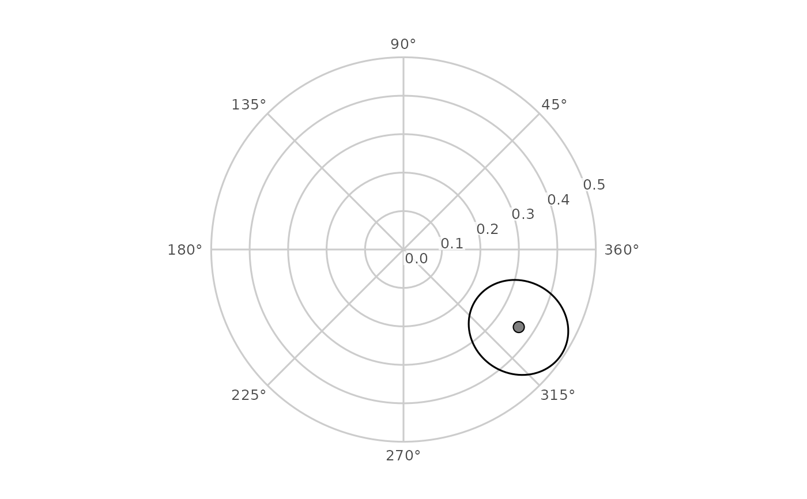

Draw a joint confidence ellipse for SSM coordinates in circumplex space
Source:R/geom_ssm.R
geom_ssm_ellipse.RdA ggplot2 layer that draws, for each profile, the ellipse of a
bivariate normal region on the Cartesian (x, y) coordinates of the
Structural Summary Method, on a circumplex canvas built with
coord_circumplex() (for example the canvas from ggcircumplex()). Each
row supplies the centre (x0, y0) and the three elements of a 2 by 2
covariance matrix; the layer computes the ellipse's outline in Cartesian
space, converts each vertex to a displacement and an amplitude, and hands
those to the coordinate system, which owns the polar transform.
Usage
geom_ssm_ellipse(
mapping = NULL,
data = NULL,
stat = "identity",
position = "identity",
...,
level = 0.95,
n = 100,
na.rm = TRUE,
show.legend = NA,
inherit.aes = TRUE
)Arguments
- mapping, data, stat, position, show.legend, inherit.aes, ...
Standard ggplot2 layer arguments.
mappingmust supply thex0,y0,var_x,var_y, andcov_xyaesthetics: the centre and the variances ofxandyand their covariance, all in the score metric of the Cartesian coordinates.- level
A single number strictly between 0 and 1: the confidence level of the region (default 0.95).
- n
The number of vertices on each outline (default 100), a single whole number of at least 3; the path returns to its first vertex.
- na.rm
If
FALSE, warn (with the dropped-row count) before removing rows with a non-finite centre or covariance element; ifTRUE(the default) remove them silently. A covariance that is not positive definite is an error, not a missing value.
Details
The outline is the contour (v - c)' S^-1 (v - c) = qchisq(level, 2),
where c is the centre and S the covariance: under a bivariate normal
approximation to the distribution of (x, y), sampling or posterior, it
encloses the joint region at confidence level. ssm_ellipse_data() computes the five
columns from an ssm_draws() object. The ellipse is a statement about the
Cartesian pair, not about amplitude and displacement separately; the wedge
geom_ssm_arc() draws is the pair of marginal intervals on those two
parameters, and the two regions need not coincide.
Vertices are unwrapped along the outline so that an ellipse straddling the
0/360 seam is drawn across it, and an ellipse whose inscribed polygon
contains the origin winds once round the centre of the canvas. Unwrapped
displacements may therefore
fall outside [0, 360). Each retained input row is one outline: the layer
sets the group aesthetic to one value per retained row, replacing any
group the mapping supplies.
See also
Other circumplex layers:
coord_circumplex(),
geom_ssm_arc(),
geom_ssm_path(),
geom_ssm_point(),
ggcircumplex(),
scale_x_circumplex(),
theme_circumplex()
Examples
set.seed(1)
draws <- cbind(rnorm(500, 0.4, 0.1), rnorm(500, 0.3, 0.05),
rnorm(500, -0.2, 0.05))
res <- ssm_draws(draws, type = "parameters")
ggcircumplex(octants(), amax = 0.5) +
geom_ssm_ellipse(
data = ssm_ellipse_data(res),
mapping = ggplot2::aes(
x0 = x0, y0 = y0, var_x = var_x, var_y = var_y, cov_xy = cov_xy
)
) +
geom_ssm_point(
data = res$results,
mapping = ggplot2::aes(amplitude = a_est, displacement = d_est)
)
